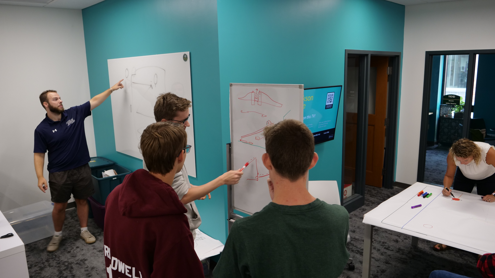
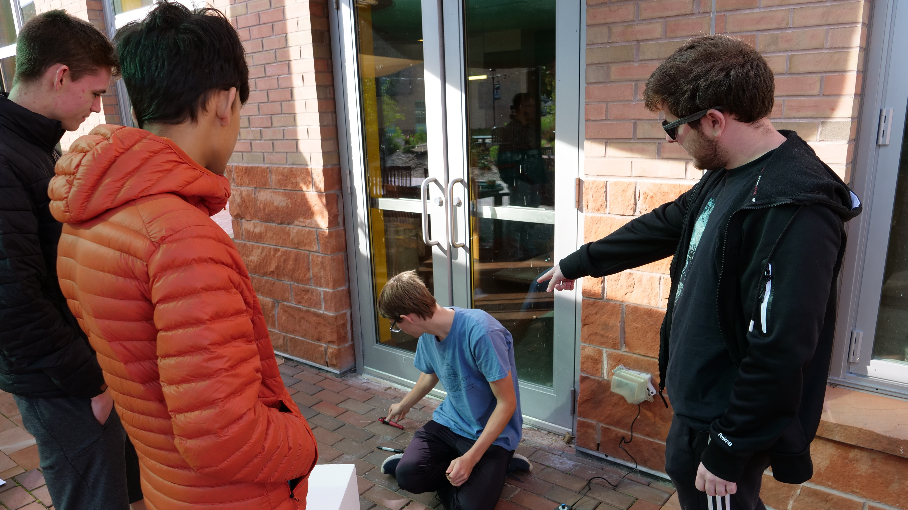
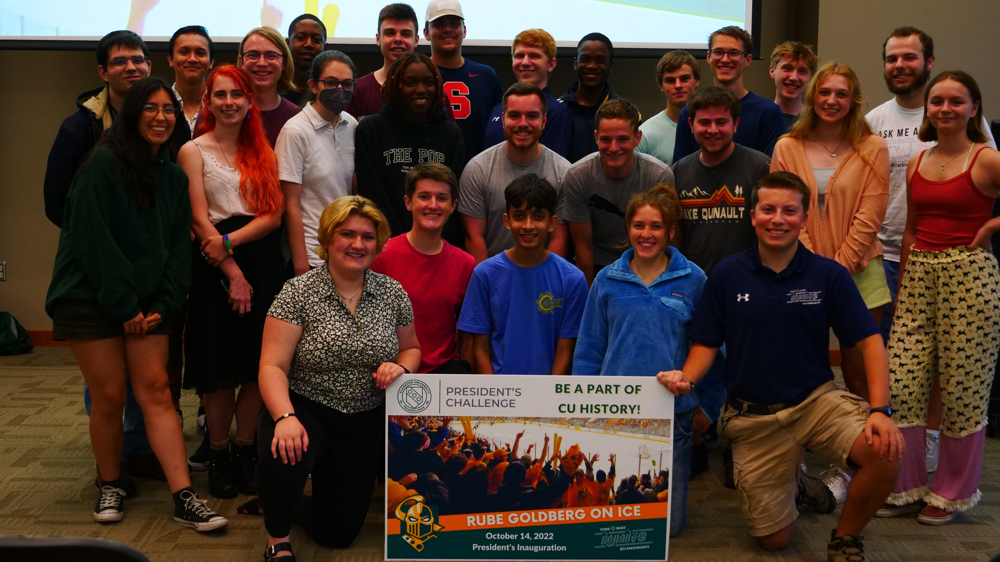

President's
Challenge
The President's Challenge 2022 was a highly anticipated event, and our team was determined to make a lasting impression. The challenge was to design and build a Rube Goldberg machine that would showcase our skills and creativity. Given the 6 weeks lead time, we quickly got to work and brainstormed the best possible design for the machine.
 Our team decided to focus on computer engineering and came up with a design that would sense a puck falling from a device behind us, activate a motor to pull a string, and shoot the puck using a puck shooter. The design was innovative and unique, and we were confident that it would be well received. While the physical part of the module was being built, I was tasked with programming the Arduino to incorporate some fancy LED lights and a functioning SONAR sensor to detect the puck. This was a challenging task, and I faced several trials and errors. However, I persevered, and after several weeks of hard work, I finally got it to work.
With all the pieces in place, it was time to put everything together and make the final run. We practiced taking the huge piece on and off the ice several times, and after 300 trillion tries, we finally did the final run.
The results were amazing, and everything went smoothly. The crowd was in awe of our Rube Goldberg machine, and it was a huge success.
 In conclusion, the President's Challenge 2022 was an incredible experience, and I am proud to have been a part of such an amazing team. The challenges that we faced along the way only made us stronger, and I am grateful for the opportunity to showcase my skills and creativity. This project has given me valuable experience in project management, problem-solving, and team collaboration. I am eager to continue learning and growing as an engineer.